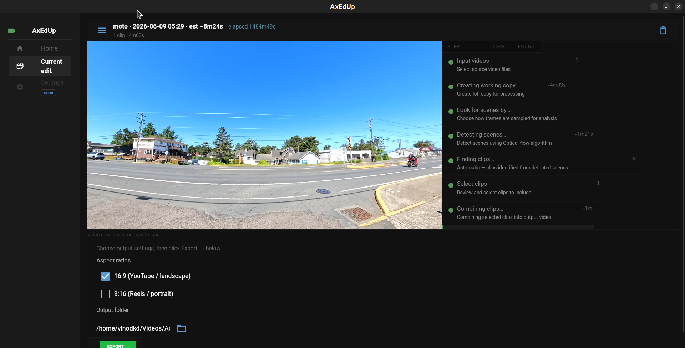

AxEdUp analyzes your action camera footage, finds the interesting moments, and assembles a finished video — no editing skills required.
Linux · Windows · macOS

Point it at an SD card or folder. It finds your clips and extracts metadata.
Generates a low-resolution proxy for fast processing — originals are never touched.
Optical flow analysis finds scene changes and scores each segment by motion intensity.
Activity peaks are identified and ranked. GoPro GPMF and DJI SRT telemetry (speed, GPS) factor in when available.
Browse thumbnails sorted by activity score. Mark which moments to keep or skip.
Selected clips are cut, color-graded, and scored with music from a sport preset. A preview renders automatically.
Final H.264 encode in 16:9, 9:16, or 1:1 — ready to share.
No timeline scrubbing. No effects panels. The computer edits; you approve.
| Camera | Video | Telemetry |
|---|---|---|
| GoPro Hero 5+ | MP4 | GPMF (speed, GPS, accelerometer) |
| DJI Osmo Action | MP4 | SRT sidecar (speed, GPS, altitude) |
| Insta360 | MP4 / MOV | Motion analysis only |
| Generic action cams | MP4 / MOV | Motion analysis only |
Download the AppImage, make it executable, run it.
chmod +x AxEdUp-*.AppImage
./AxEdUp-*.AppImageOn minimal installs: sudo apt install libgtk-3-0 libwebkit2gtk-4.0-37
Run the installer. Standard Next → Next → Install wizard. No dependencies required.
Download InstallerOpen the DMG, drag AxEdUp to Applications. On first launch, right-click → Open to pass Gatekeeper (one time only).
Download DMG